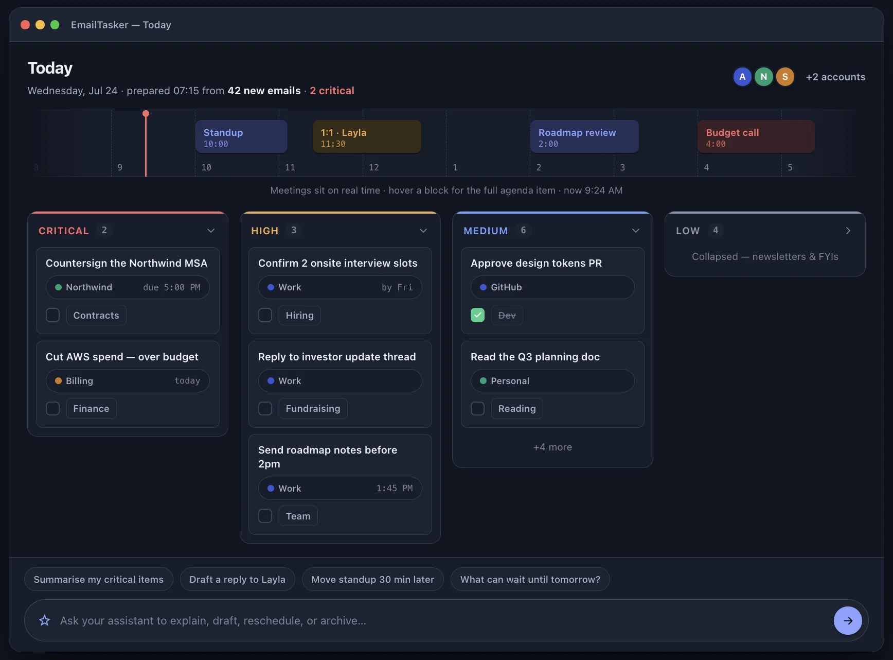
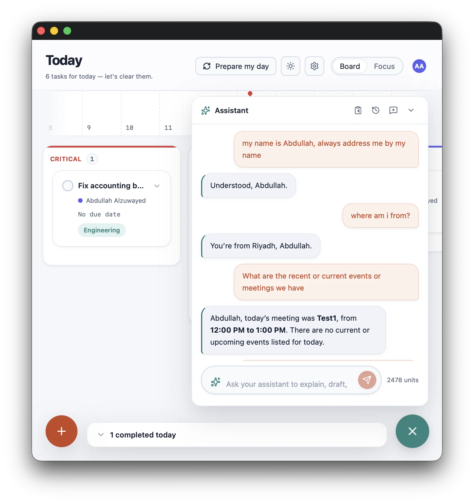
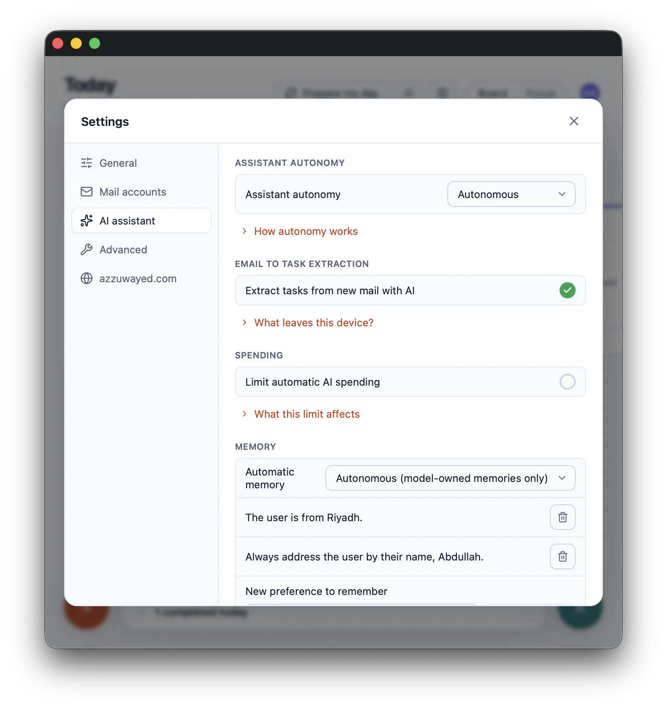

ابدأ يومك حتى دون ربط البريد
نظّم مهامك ومواعيدك مجانًا، ثم أضف حساب Microsoft عندما تريد جمع بريدك وعملك في المكان نفسه.
يومك كله في مكان واحد
يجمع ايميل تاسكر بريد Microsoft ومهامك وتقويماتك في تطبيق واحد على macOS. خطط محليًا مجانًا، وابدأ يومك مع Pro بخلاصة مرتبة، وأنجز أعمالك بمساعدة ذكية تتيح لك التراجع عن التغييرات.
ابدأ مجانًا · مزايا البريد مع azzuwayed Pro · يتطلب macOS 14 أو أحدث
كل ما تحتاجه لإنجاز يومك
لمن يديرون أيامًا مزدحمة وصناديق بريد Microsoft ويريدون أولويات أوضح وصندوق وارد أكثر هدوءًا.
نظّم مهامك ومواعيدك مجانًا، ثم أضف حساب Microsoft عندما تريد جمع بريدك وعملك في المكان نفسه.
حدّد المواعيد النهائية، وعدّل المهام فورًا، وغيّر أولوياتها، أو أجّلها، أو احذفها مع إمكانية التراجع.
اعرض يومًا واحدًا أو ثلاثة أو سبعة أيام، وعدّل اجتماعاتك، وانضم إليها عند موعدها دون مغادرة التطبيق.
حوّل رسائل Microsoft المهمة إلى مهام دائمة، واستمر بالقواعد المحلية عند إيقاف الذكاء الاصطناعي.
افتح الرسالة المرتبطة بالمهمة، ونزّل مرفقاتها، ثم أرشفها أو احذفها دون تبديل التطبيقات.
ابدأ بخلاصة صباحية مرتبة تجمع مهامك ومواعيدك المهمة.
من أول اليوم إلى آخر مهمة
شاهد اجتماعاتك على خط زمني واضح، ورتّب مهامك حسب الأولوية، واجمع أعمالك الشخصية وحسابات Microsoft المتصلة.

ركّز على أولوية واحدة، وأبقِ بقية الأولويات ظاهرة باختصار. أنجز ما أمامك دون أن تفقد صورة يومك كاملة.

دع المساعد ينجز معك، وراجع إجراءاته قبل تنفيذها، وتراجع عن أي تغيير متى احتجت.

اختر ما يمكن للمساعد إنجازه، وراجع ما يتذكره، واضبط تفضيلاتك كلها من شاشة واحدة.

أنجز ما يحتاج إلى انتباهك، وأبقِ موعدك التالي أمامك، ثم انتقل إلى بقية يومك براحة أكبر.

استخدم المهام والتقويم دون عضوية. ومع Pro يمكنك ربط بريدك، وتحويل الرسائل إلى مهام، والاستعانة بالمساعد. اشترك أو جدّد عضويتك وأدر أجهزتك من حسابك على azzuwayed.com.